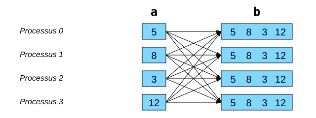
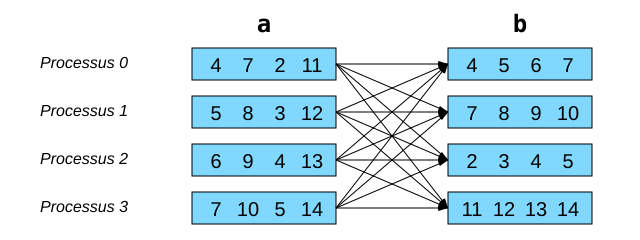

Annexes#
Autres communications collectives#
Regroupement à tous avec allgather#
C’est l’équivalent de gather + bcast, mais en plus efficace :

Avec mpi4py, on aurait le code suivant :
# allgather(envoi: Any) -> list[Any]
b = comm.allgather(a)
Transposition globale avec alltoall#
C’est l’équivalent de scatter * gather, mais en plus efficace :

Avec mpi4py, on aurait le code suivant :
# alltoall(envoi: Sequence[Any]) -> list[Any]
b = comm.alltoall(a)
Mesure du temps écoulé avec MPI.Wtime()#
Pour mesurer précisément le temps d’exécution d’une partie du code Python, on
peut utiliser la fonction MPI.Wtime() qui retourne une valeur de temps en
secondes en double précision. Pour calculer un temps écoulé, il suffit
d’appeler la fonction deux fois et de calculer la différence des valeurs
retournées. Typiquement, un seul processus effectue ce calcul.
if rank == 0:
t1 = MPI.Wtime()
# Calcul parallèle et communications
if rank == 0:
t2 = MPI.Wtime()
print(f'Temps = {t2 - t1:.6f} sec')
Notions avancées#
La bibliothèque mpi4py possède d’autres fonctionnalités :
Communications avec des tableaux NumPy.
Ce sont les méthodes débutant par une majuscule (voir le tutoriel).
Communications collectives avec des portions inégales.
Les fonctions de communication collective vues jusqu’ici envoyaient un même nombre d’éléments pour chaque processus MPI.
Avec
mpi4py, les tableaux NumPy peuvent être divisés ou reconstruits avec un nombre différent de valeurs pour chaque processus :Avec MPI.Comm.Scatterv et MPI.Comm.Gatherv.
Ces méthodes ne tiennent pas automatiquement compte du stockage interne des tableaux NumPy, mais seulement de la séquence contiguë de données en mémoire. Il faut donc planifier le stockage interne du tableau NumPy : en mode C, les valeurs d’une matrice 2D sont stockées ligne par ligne, alors qu’en mode Fortran elles sont stockées colonne par colonne.
Pour plus d’information, voir les strides.
Voir les exemples dans
~/mpi201-main/lab/scatterv.
MPI dans les autres langages#
C et Fortran : le standard MPI est déjà défini dans ces langages.
C++ :
MPI 3.0 a éliminé les interfaces C++.
Boost MPI : bibliothèque pratique et très puissante pour les développeurs en C++.
boost::mpi::environment env(argc, argv); boost::mpi::communicator world; std::string s; if (world.rank() == 0) world.recv(boost::mpi::any_source, 746, s);
Défis de parallélisation supplémentaires#
Les codes suivants fonctionnent déjà en mode séquentiel. C’est maintenant à vous de les paralléliser avec MPI :
Pour mesurer le temps d’exécution d’un programme, la commande time srun
doit être dans un script de tâche
soumis avec la commande sbatch :
#!/bin/bash
#SBATCH --ntasks=4
#SBATCH … # temps, mémoire, etc.
time srun ./programme